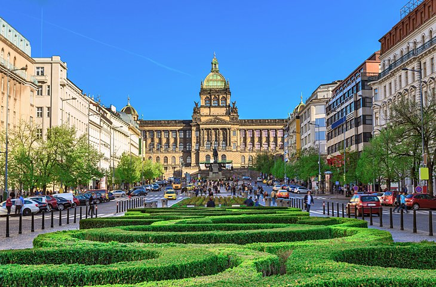

Prague's Old Town Square was the city's first market. Situated at the intersection of trade routes, it still has buildings dating back to the 10th century. In addition to its many medieval houses, the square is home to significant historic landmarks, including Old Town City Hall, which holds the Astronomical Clock, as well as St. Nicholas Church.
This square has been the site of many defining moments in Czech history, including public executions and political protests. A statue of Protestant reformer Jan Hus stands in the center, and this is a popular sightseeing area that hosts Prague's traditional Christmas markets each December.
Just a five-minute walk from the Old Town Square sits Wenceslas Square in the heart of New Town. Not as new as it sounds, this large public space was laid out in the 14th century as a horse market. Today, it is used for parades, festivals, and at times, demonstrations. This is a popular tourist area that is filled with hotels, restaurants, shopping, and entertainment. The National Museum's main building makes for a stunning background to the square and is one of the city's most popular attractions, with a collection of 14 million items.
Address:- Staromestské nám., 110 00 Staré Mesto